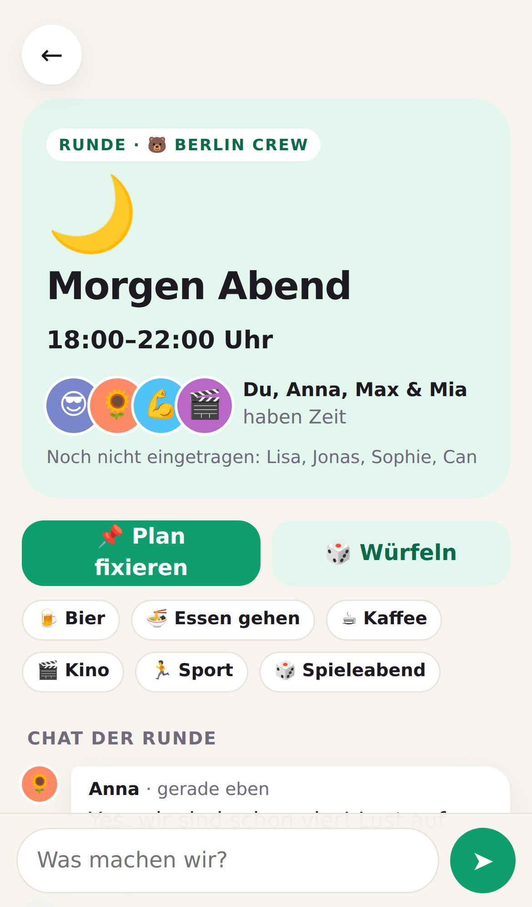

Neu · v2
Zeiten & Runden
/v2/
- Zeiten im Wochenraster antippen, mehrmals pro Woche
- Überschneidungen werden automatisch zu Runden pro Freundesgruppe
- Runden-Chat, Ideen-Chips, 🎲 Würfel und „Plan fixieren“
- Alles aus v1 ist weiterhin drin
